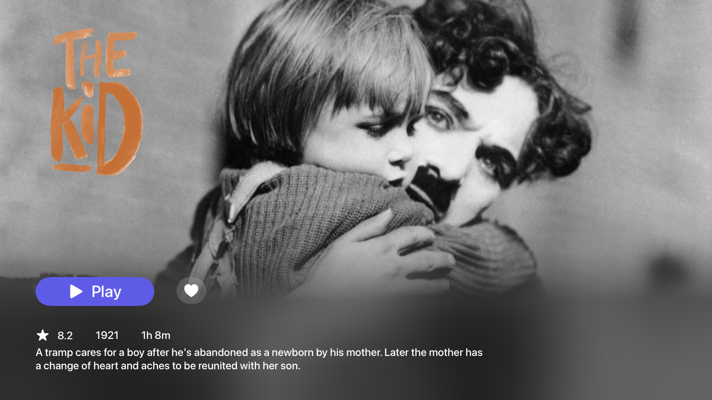
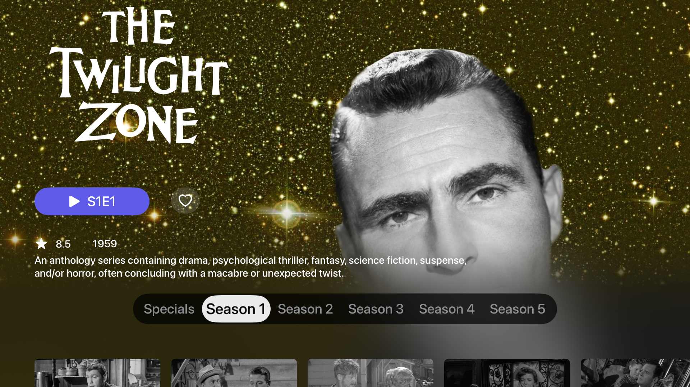

Velo
Your Media Hub for tvOS. Discover, track, and enjoy movies and TV shows seamlessly.

Main Home Screen

Mid Home Screen

Movie Detail View

Series Detail
tvOS First: Native tvOS experience.
Smart Playback: Tracks progress for all your content.
Content Discovery: TMDB integration, Streamio add-on (catalog and streams).
Custom Shelves: Organize movies, TV, networks, and anime.
Intuitive tvOS: Optimized interface, smooth playback with an internal built-in player.
Personal Library: Manage your watch list.